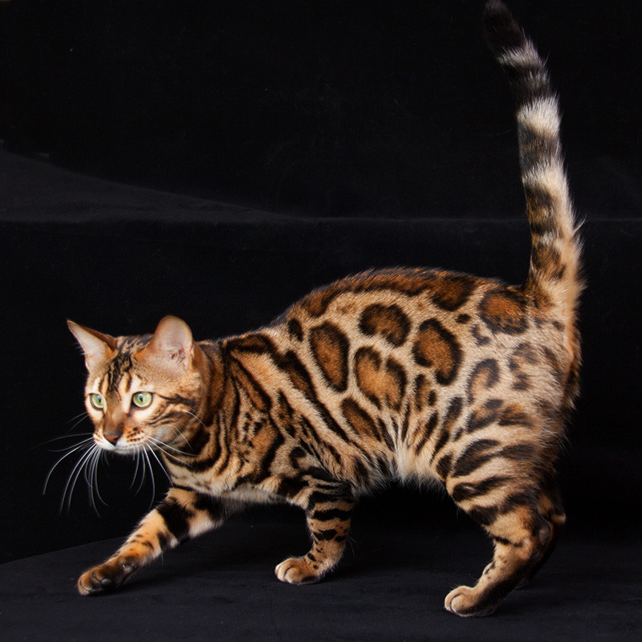

Бенгальская
| Родина и время возникновения | Порода признана | Окрас |
| США, 1983 г. | CFA, TICA, FIFe. | Коричневый, мраморный, снежно-мраморный, дымчатые варианты, различные тебби-окрасы. |
Характер
Бенгальские кошки обладают врождённым любопытством. Они неисправимые исследователи и эта черта характера бенгальских кошек одна из важных. В определённый момент животным надоедают любимые игрушки, занятия, и они от скуки начинают искать приключения. Животные могут искать способы выбраться наружу через форточку, стащить бельё с балкона соседей, схватить и уничтожить дорогой сердцу хозяина предмет, изучать содержимое шкафов и ящиков, особенно если в них хранятся продукты питания.
Бенгалы очень активны, обожают прыгать, бегать, играть. Активность, дополненная высоким интеллектом, делает представителей породы настоящими озорниками, смутьянами.
С другой стороны бенгалы очень привязываются к хозяину. Выбирая кого-то одного из членов семьи, кошка станет ему верным и любящим компаньоном. Они демонстрируют свою привязанность мурлыканьем, постоянным нахождением рядом, могут спать в одной постели с хозяином, позволять себя гладить, вычёсывать шерсть.
Бенгальские кошки ладят с детьми, но всё же больше подходят для семей с взрослыми детьми и для людей, готовых уделять животным много внимания. Людям, которые большую часть времени отсутствуют дома, бенгальская порода не подходит. Представители породы нуждаются во взаимодействии с человеком, другими животными, умственной стимуляции и физических нагрузках.
Представители породы дружелюбно настроены по отношению к другим животным, хотя чётко разграничивают свою территорию и яростно её защищают.
Бенгальские кошки быстро поддаются обучению. По сравнению с другими породами быстрее привыкают ходить на поводке, учатся ходить в туалет в отведённое для этого место.
Бенгалы необычайно болтливы, у них разнообразный вокальный репертуар. Тревожные гортанные звуки могут сменяться протяжным мяуканьем или «чириканьем».
Представители породы любят высоту. Всегда ищут наиболее высокие места в доме, чтобы с высоты наблюдать за другими животными и людьми.
Здоровье
В целом порода относится к числу здоровых, животные обладают крепким иммунитетом. Но представители породы могут быть склонны к некоторым инфекционным заболеваниям. Среди наследственных проблем со здоровьем выделяют поликистоз почек, но возможность проведения ДНК тестов позволяет выводить больных кошек из разведения.
Встречается у кошек данной породы:
- прогрессирующая атрофия сетчатки, признаки которой проявляются в возрасте 8-20 недель;
- дефицит пируваткиназы кошачьих, унаследованный от абиссинских кошек, которых использовали в разведении;
- гипертрофическая кардиомиопатия.